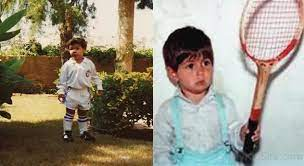

Tennis is a racket sport that can be played individually against a single opponent (singles) or between two teams of two players each (doubles). Each player uses a tennis racket that is strung with cord to strike a hollow rubber ball covered with felt over or around a net and into the opponent's court. The object of the game is to maneuver the ball in such a way that the opponent is not able to play a valid return. The player who is unable to return the ball will not gain a point, while the opposite player will.
Tennis is an Olympic sport and is played at all levels of society and at all ages. The sport can be played by anyone who can hold a racket, including wheelchair users. The modern game of tennis originated in Birmingham, England, in the late 19th century as lawn tennis.[1] It had close connections both to various field (lawn) games such as croquet and bowls as well as to the older racket sport today called real tennis. During most of the 19th century, in fact, the term tennis referred to real tennis, not lawn tennis.
The rules of modern tennis have changed little since the 1890s. Two exceptions are that from 1908 to 1961 the server had to keep one foot on the ground at all times, and the adoption of the tiebreak in the 1970s. A recent addition to professional tennis has been the adoption of electronic review technology coupled with a point-challenge system, which allows a player to contest the line call of a point, a system known as Hawk-Eye.
Tennis is played by millions of recreational players and is also a popular worldwide spectator sport. The four Grand Slam tournaments (also referred to as the Majors) are especially popular: the Australian Open played on hard courts, the French Open played on red clay courts, Wimbledon played on grass courts, and the US Open also played on hard courts.
MY FAVOURITE SPORT: TENNIS

Tennis is a racket sport that can be played individually against a single opponent (singles) or between two teams of two players each (doubles). Each player uses a tennis racket that is strung with cord to strike a hollow rubber ball covered with felt over or around a net and into the opponent's court. The object of the game is to maneuver the ball in such a way that the opponent is not able to play a valid return. The player who is unable to return the ball will not gain a point, while the opposite player will.
Tennis is an Olympic sport and is played at all levels of society and at all ages. The sport can be played by anyone who can hold a racket, including wheelchair users. The modern game of tennis originated in Birmingham, England, in the late 19th century as lawn tennis.[1] It had close connections both to various field (lawn) games such as croquet and bowls as well as to the older racket sport today called real tennis. During most of the 19th century, in fact, the term tennis referred to real tennis, not lawn tennis.
The rules of modern tennis have changed little since the 1890s. Two exceptions are that from 1908 to 1961 the server had to keep one foot on the ground at all times, and the adoption of the tiebreak in the 1970s. A recent addition to professional tennis has been the adoption of electronic review technology coupled with a point-challenge system, which allows a player to contest the line call of a point, a system known as Hawk-Eye.
Tennis is played by millions of recreational players and is also a popular worldwide spectator sport. The four Grand Slam tournaments (also referred to as the Majors) are especially popular: the Australian Open played on hard courts, the French Open played on red clay courts, Wimbledon played on grass courts, and the US Open also played on hard courts.
MY FAVOURITE PLAYER: RAFAEL NADAL
Rafael "Rafa" Nadal Parera Spanish is born on 3 June 1986) is a Spanish professional tennis player. He is ranked world No. 3 by the Association of Tennis Professionals (ATP), has been ranked No. 1 in the ATP rankings for 209 weeks, and has finished as the year-end No. 1 five times. Nadal has won 20 Grand Slam men's singles titles, an all-time record shared with Roger Federer, and 36 Masters 1000 men's singles titles, an all-time record shared with Novak Djokovic.
His 13 French Open titles in particular are a record at any tournament. Nadal's dominance on clay is also highlighted by 62 of his 88 ATP singles titles coming on the surface, including 26 of his 36 ATP Masters titles, and his 81 consecutive wins on clay is the longest single-surface win streak in the Open Era.
From childhood through most of his professional career, Nadal was coached by his uncle Toni. He was one of the most successful teenagers in ATP Tour history, reaching No. 2 in the world at age 19 and winning 16 titles, including his first French Open and six Masters events. Nadal became No. 1 for the first time in 2008 after his first major victory off clay against the longtime top-ranked Federer, his main rival through 2010, in a historic Wimbledon final. He also won an Olympic gold medal in singles that year in Beijing, and then completed the career Grand Slam at the 2010 US Open in the only year where he won three majors. With his Olympic gold medal, he is also one of only two male players to complete the career Golden Slam.
In the next decade, Novak Djokovic emerged as Nadal's primary rival. The two have faced each other 57 times (including nine major finals), the most in men's Open Era history. Since Djokovic defeated Nadal in three consecutive major finals between the 2011 and 2012 French Open tournaments, Nadal has struggled at Wimbledon and has not won another Australian Open. He has continued his dominance at the French Open by winning at least four consecutive titles a second and a third time, while also winning three more US Open titles. He tied Federer's record for the most Grand Slam men's singles titles at the 2020 French Open.
Nadal is the only left-handed member of the Big Three. One of his main strengths is his forehand, which he routinely hits with extremely heavy topspin at difficult angles to return. He is one of the best at breaking serve, regularly appearing among the tour leaders in percentage of return games, return points, and break points won. Nadal has won the Stefan Edberg Sportsmanship Award four times, and was the Laureus World Sportsman of the Year in 2011 and 2021. Representing Spain, he has an Olympic gold medal in both singles and doubles. He has also led the Spain Davis Cup team to five titles while playing alongside fellow top 10 players including David Ferrer and his future coach Carlos Moyá. Outside of competing, Nadal opened a tennis academy in his hometown of Mallorca, and is also an active philanthropist.
MY INSPIRATION


